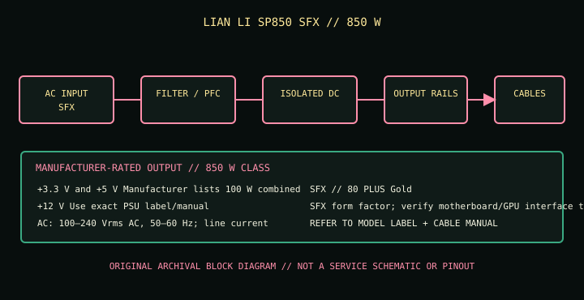

[ POWER CONVERSION // IDENTIFIED MODEL ]
LIAN LI SP850 SFX
Model-specific catalog entry for manufacturer identifier SP850 BLACK / SP850 WHITE. Verify the entire printed model, suffix, hardware revision and region on the physical unit before selecting or servicing it.

HIGH-VOLTAGE SAFETY: Disconnect mains before external inspection. Never open or probe a PSU; dangerous voltage can remain after unplugging. Replace damaged, wet, burned, modified or unidentified units as complete assemblies or use qualified service.
Model-specific input, output & fit
| Manufacturer model / SKU | LIAN LI SP850 SFX; SP850 BLACK / SP850 WHITE. Regional suffix or revision must match the physical label. | ||||||||||||
|---|---|---|---|---|---|---|---|---|---|---|---|---|---|
| Form factor / efficiency / generation | SFX; 80 PLUS Gold; SFX form factor; verify motherboard/GPU interface to host requirements. Form factor is not proof of electrical compatibility. | ||||||||||||
| AC input | 100–240 Vrms AC, 50–60 Hz; line current varies by operating condition; consult the exact PSU label. | ||||||||||||
| Maximum DC output | 850 W total continuous-output class as published by the manufacturer. A total wattage rating does not replace per-rail/combined limits or label verification. | ||||||||||||
| DC output rails |
| ||||||||||||
| Output connectors / cables | Manufacturer cable list: 24/20-pin motherboard ×1; CPU/ATX12V 8/4+4-pin ×2; PCIe 6+2-pin ×1 plus two 6+2-pin connectors on one cable; 12VHPWR ×1; SATA ×8; peripheral 4-pin ×4. Fully modular. Check product page for cable lengths/ends and use only this model’s leads. | ||||||||||||
| Mechanical envelope | 100 × 63.5 × 125 mm (depth × width × height; SFX). Confirm screw points, inlet/fan orientation, airflow, clearance and tolerance against the case drawing; do not force-fit. | ||||||||||||
| Protection / limits | Over-current, over-voltage, under-voltage, over-power, short-circuit and thermal protections are model/revision specific. Use the correct manual; do not test protections or probe inside the unit. |
Electrical compatibility & safe installation
- The SP850 product page lists a 12VHPWR cable and PCIe legacy leads. Verify the connected GPU’s required cable and published power limits, cable seating, bend clearance and host demand. Match SFX dimensions and airflow needs; physical plug fit is not proof of correct modular-side pinout.
- Confirm the AC mains supply is within the PSU input range and the region’s plug/cord/circuit requirements. Stop if the nameplate differs from this reference.
- Check ATX motherboard, EPS CPU and GPU requirements, individual/combined rail ratings, total demand, transient excursions, thermal environment and case mounting separately; connector shape or nominal wattage alone does not establish suitability.
- PSU-side modular pinouts are not standardized. Never transfer, splice, repin or adapt detachable cables unless the manufacturer explicitly approves the exact cable for this exact model and revision.
- When using a high-current 16-pin GPU cable, follow PSU and GPU manufacturer seating, bend-radius, clearance and load guidance. Do not energize a connector that is loose, visibly damaged, overheated or under side pressure.
- Do not open, repair, or electrically probe the PSU. Isolate power and replace a suspect unit; qualified technicians must follow the correct model-specific procedure.
Revision and sourcing notes
This entry describes only the listed SKU/model family. Manufacturers may change bundles, electrical tables, regional input ratings or cable generations without changing the marketing name. Verify the exact unit label and matching documentation; if any rating or connector count differs, use that exact manual/nameplate and do not install by assumption.
Published ratings describe a new compliant product, not the condition or remaining life of a used unit.
Manufacturer sources & standards
- LIAN LI official product pageManufacturer product identity, nominal power, form factor and model-specific features. Match the printed SKU/revision on the unit.
- LIAN LI official specifications / documentationManufacturer source for the electrical ratings, connector bundle, dimensions and installation constraints; open the edition matching the exact model and market.
- LIAN LI further official referenceAdditional manufacturer source or technical guidance. If a referenced document is a product-specific manual, its instructions and unit label govern.
- Intel ATX desktop PSU design guideCompatibility context for standard ATX-family systems only; this document does not validate a specific cable pinout or proprietary interface.
Standards references apply only to the interface they cover. Model-specific manufacturer manual and unit label control installation; this reference is not a service procedure, certification, or pinout.